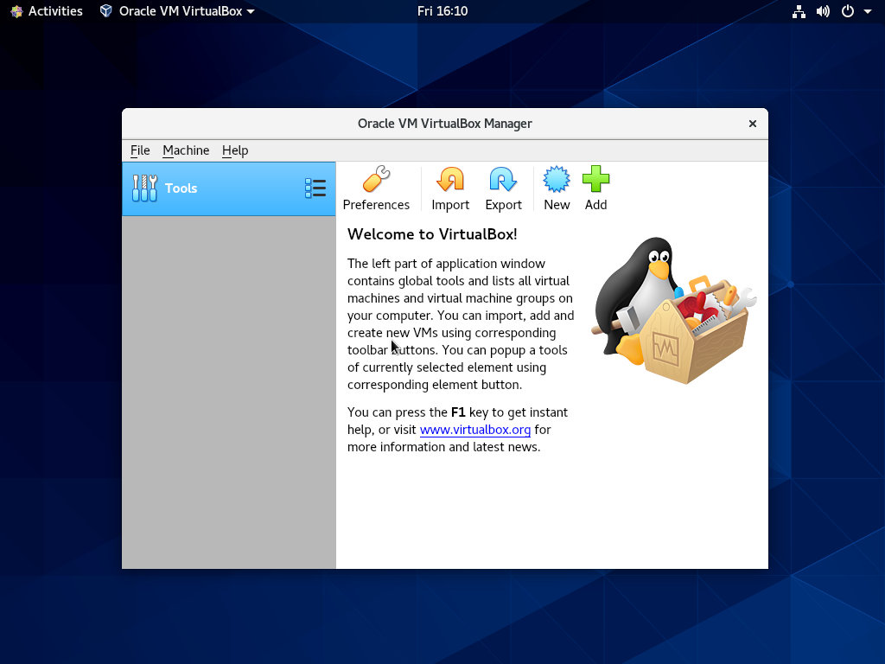

在 CentOS 8 上安装 VirtualBox
在本教程中，我们逐步演示如何在 CentOS 8 上安装 VirtualBox 。
VirtualBox 是一个开源，跨平台的虚拟化平台。它支持多种操作系统，包括 Linux 和 Windows ，并允许您同时运行多个虚拟机。
在 CentOS 8 上安装 VirtualBox
以 root 或具有 sudo 特权的用户执行以下步骤，以在 CentOS 8 上安装 VirtualBox ：
-
启用 Oracle 的 VirtualBox 存储库：
sudo dnf config-manager --add-repo=https://download.virtualbox.org/virtualbox/rpm/el/virtualbox.repo -
在撰写本文时， VirtualBox 的最新稳定版本为 6.0.x 。运行以下命令以安装
VirtualBox-6.0软件包：sudo yum install VirtualBox-6.0在安装过程中，系统将提示您导入存储库 GPG 密钥。输入
y并点击Enter。
至此， 您已经成功的在 CentOS 8 系统上安装了 VirtualBox。
安装 VirtualBox Extension Pack
VirtualBox Extension Pack 为客户机系统提供了一些有用的功能，例如虚拟 USB 2.0 和 3.0 设备，对 RDP 的支持，图像加密等等。
用于 wget 从 VirtualBox 下载页面下载扩展包：
wget https://download.virtualbox.org/virtualbox/6.0.14/Oracle_VM_VirtualBox_Extension_Pack-6.0.14.vbox-extpack
下载文件后，使用以下命令将其导入：
sudo VBoxManage extpack install Oracle_VM_VirtualBox_Extension_Pack-6.0.14.vbox-extpack
系统将向您展示 Oracle 许可证，并提示您接受条款和条件。
Do you agree to these license terms and conditions (y/n)?
输入 y 并点击 Enter 。安装完成后，您会看到以下输出：
0%...10%...20%...30%...40%...50%...60%...70%...80%...90%...100%
Successfully installed "Oracle VM VirtualBox Extension Pack".
启动 VirtualBox
现在 VirtualBox 已安装在 CentOS 机器上，您可以从命令行通过键入 VirtualBox 或单击 VirtualBox 图标来启动它。
首次启动 VirtualBox 时，将出现如下所示的窗口：

从这里，您可以开始创建 Windows 和 Linux 虚拟机了。
结论
在 CentOS 8 上安装 VirtualBox 是一项简单的任务。您需要做的就是启用 Oracle 存储库并使用 dnf 命令来安装 VirtualBox 软件包。
有关 VirtualBox 的更多信息，请访问 VirtualBox 官方文档页面。